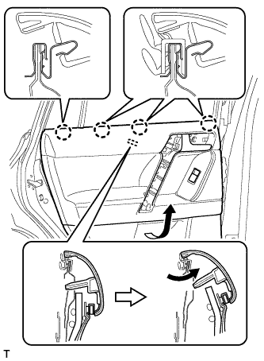
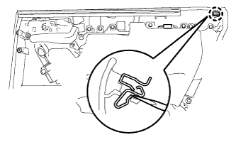

ЗАДНЯЯ ДВЕРЬ > РАЗБОРКА |
| 1. ОТСОЕДИНИТЕ ПРОВОД ОТ ОТРИЦАТЕЛЬНОГО (-) ВЫВОДА АККУМУЛЯТОРНОЙ БАТАРЕИ |
| 2. СНИМИТЕ ДЕРЖАТЕЛЬ ВНУТРЕННЕЙ РУЧКИ ЛЕВОЙ ДВЕРИ № 2 |
 |
С помощью съемника молдингов A освободите 3 захвата и снимите оправу внутренней ручки задней двери, как показано на рисунке.
| 3. СНИМИТЕ ЛЕВУЮ НАКЛАДКУ ВЕРХНЕГО ПОРУЧНЯ |
 |
С помощью съемника молдингов А освободите 8 захватов и снимите крышку верхнего поручня.
| 4. СНИМИТЕ ПАНЕЛЬ ОБЛИЦОВКИ ЛЕВОЙ ЗАДНЕЙ ДВЕРИ |
 |
Выверните 3 винта.
С помощью съемника фиксаторов расцепите 9 фиксаторов.
|  |
Вытяните панель облицовки задней двери в сборе в направлении, указанном стрелкой на рисунке.
Поднимите панель облицовки задней двери в сборе, чтобы освободить 4 захвата, и снимите панель облицовки задней двери вместе с внутренним уплотнителем стекла задней двери.
 |
Отсоедините трос дистанционного управления замком задней двери в сборе и внутренний трос замка задней двери в сборе.
 |
Отсоедините все разъемы.
| *A | Для моделей с 14 динамиками |
| *B | Для моделей с 9 динамиками |
|  |
С помощью отвертки освободите захват и снимите зажим.
| 5. СНИМИТЕ ВНУТРЕННИЙ УПЛОТНИТЕЛЬ СТЕКЛА ЛЕВОЙ ЗАДНЕЙ ДВЕРИ |
 |
С помощью отвертки освободите 3 захвата и снимите внутренний уплотнитель стекла задней двери с панели облицовки задней двери в сборе, как показано на рисунке.
| 6. СНИМИТЕ ПЕРЕКЛЮЧАТЕЛЬ ЭЛЕКТРИЧЕСКОГО СТЕКЛОПОДЪЕМНИКА ЗАДНЕЙ ДВЕРИ В СБОРЕ |
 |
Освободите 2 захвата и снимите переключатель электрического стеклоподъемника задней двери в сборе.
| 7. СНИМИТЕ ЛАМПУ ОСВЕЩЕНИЯ ПРОЕМА ЛЕВОЙ ЗАДНЕЙ ДВЕРИ В СБОРЕ |
Отцепите 2 захвата и снимите лампу.
Отсоедините разъем.
| 8. СНИМИТЕ ЛАМПУ ПОДСВЕТКИ ВНУТРЕННЕЙ РУЧКИ ЛЕВОЙ ЗАДНЕЙ ДВЕРИ В СБОРЕ |
Отсоедините разъем.
| *1 | Защитная клейкая лента |
С помощью отвертки освободите захват и снимите лампу.
| 9. СНИМИТЕ ЛАМПУ ОСВЕЩЕНИЯ САЛОНА № 2 В СБОРЕ |
Отсоедините разъем.
Снимите зажим.
Поверните лампу в направлении, указанном стрелкой, и снимите ее.
| 10. СНИМИТЕ ВНУТРЕННЮЮ РУЧКУ ЛЕВОЙ ЗАДНЕЙ ДВЕРИ В СБОРЕ |
 |
Выверните 8 винтов и снимите подлокотник задней двери.
Выверните 2 винта.
Освободите направляющую и 2 захвата и снимите внутреннюю ручку задней двери в сборе с панели облицовки задней двери.
| 11. СНИМИТЕ ЗАДНИЙ ДИНАМИК № 2 В СБОРЕ (для моделей с 14 динамиками) |
 |
Выверните 2 винта и снимите задний динамик № 2.
| 12. СНИМИТЕ ЗАДНИЙ ДИНАМИК |
Отсоедините разъем.
Выверните 3 винта.
Освободите 2 захвата и снимите задний динамик.
| 13. СНИМИТЕ КРЫШКУ ТЕХНОЛОГИЧЕСКОГО ОТВЕРСТИЯ ЗАДНЕЙ ДВЕРИ |
 |
Отсоедините разъем.
Освободите 3 зажима, переместите жгут проводов, чтобы он не мешал, и снимите крышку технологического отверстия.
| 14. СНИМИТЕ НАПРАВЛЯЮЩУЮ СТЕКЛА ЛЕВОЙ ЗАДНЕЙ ДВЕРИ |
 |
Снимите направляющую стекла задней двери.
| 15. СНИМИТЕ ОБЛИЦОВКУ РАМЫ ЛЕВОЙ ЗАДНЕЙ ДВЕРИ |
 |
Освободите фиксатор и снимите облицовку рамы задней двери.
| 16. СНИМИТЕ ПОПЕРЕЧИНУ ОКНА ЛЕВОЙ ЗАДНЕЙ ДВЕРИ В СБОРЕ |
 |
Ослабьте болт временного крепления.
| *1 | Болт временного крепления |
Выверните 2 болта и винт.
Снимите поперечину окна задней двери в сборе.
Выверните болт временного крепления из поперечины окна задней двери в сборе.
| 17. СНИМИТЕ НЕОПУСКНОЕ ЗАДНЕЙ ЛЕВОЙ ДВЕРИ САЛОНА |
 |
Снимите неопускное стекло и уплотнитель задней двери как единый узел, см. рисунок.
| 18. СНИМИТЕ УПЛОТНИТЕЛЬ НЕОПУСКНОГО СТЕКЛА ЛЕВОЙ ЗАДНЕЙ ДВЕРИ |
Снимите уплотнитель с неопускного стекла задней двери.
| 19. СНИМИТЕ СТЕКЛО ЛЕВОЙ ЗАДНЕЙ ДВЕРИ В СБОРЕ |
Подсоедините провод к отрицательному (-) выводу аккумуляторной батареи и разъему электродвигателя стеклоподъемника задней двери.
Подсоедините переключатель электрического стеклоподъемника в сборе и сместите стекло задней двери таким образом, чтобы показались болты стекла двери.
Отсоедините переключатель электрического стеклоподъемника и разъемы электродвигателя стеклоподъемника задней двери.
Отсоедините провод от отрицательного (-) вывода аккумуляторной батареи.
 |
Снимите стекло задней двери в сборе со стеклоподъемника задней двери в сборе, как показано на рисунке.
 |
Извлеките стекло задней двери в направлении, указанном на рисунке стрелками, и в порядке, обозначенном на рисунке.
| 20. СНИМИТЕ ЖЕЛОБОК СТЕКЛА ЛЕВОЙ ЗАДНЕЙ ДВЕРИ |
 |
С помощью отвертки снимите желобок стекла задней двери.
| *1 | Защитная клейкая лента |
| 21. СНИМИТЕ НАПОЛНИТЕЛЬ ЖЕЛОБКА СТЕКЛА ЗАДНЕЙ ДВЕРИ |
Снимите наполнитель желобка стекла задней двери.
| 22. СНИМИТЕ СТЕКЛОПОДЪЕМНИК ЛЕВОЙ ЗАДНЕЙ ДВЕРИ |
 |
Ослабьте болт временного крепления.
| *1 | Болт временного крепления |
Выверните 3 болта.
Снимите стеклоподъемник задней двери в сборе.
Выверните болт временного крепления из стеклоподъемника задней двери в сборе.
| 23. СНИМИТЕ ЭЛЕКТРОДВИГАТЕЛЬ СТЕКЛОПОДЪЕМНИКА ЛЕВОЙ ЗАДНЕЙ ДВЕРИ |
 |
Выверните 3 винта с помощью торцевого ключа "TORX" T25 и снимите электродвигатель стеклоподъемника.
| 24. СНИМИТЕ ЗАМОК ЛЕВОЙ ЗАДНЕЙ ДВЕРИ В СБОРЕ |
Выверните 3 винта с помощью торцевого ключа "TORX" T30.
| *A | Для моделей без системы двойной блокировки |
| *B | Для моделей с системой двойной блокировки |
 | Сдвиньте |
Сдвиньте замок задней двери вниз так, чтобы можно было извлечь пластину отпускания из рамы наружной ручки задней двери, и снимите замок задней двери вместе с проводами.
Снимите уплотнение жгута проводов замка двери с замка задней двери в сборе.
| 25. СНИМИТЕ ТРОС ДИСТАНЦИОННОГО УПРАВЛЕНИЯ ЗАМКОМ ЗАДНЕЙ ЛЕВОЙ ДВЕРИ В СБОРЕ |
С помощью отвертки отцепите захват.
| *A | Для моделей с системой двойной блокировки |
| *B | Для моделей без системы двойной блокировки |
Снимите трос дистанционного управления замком задней двери в сборе.
| *A | Для моделей с системой двойной блокировки |
| *B | Для моделей без системы двойной блокировки |
| 26. СНИМИТЕ ВНУТРЕННИЙ ТРОС ЗАМКА ЗАДНЕЙ ЛЕВОЙ ДВЕРИ В СБОРЕ |
С помощью отвертки расцепите 3 захвата.
| *A | Для моделей с системой двойной блокировки |
| *B | Для моделей без системы двойной блокировки |
Снимите внутренний трос замка задней двери в сборе.
| *A | Для моделей с системой двойной блокировки |
| *B | Для моделей без системы двойной блокировки |
| 27. СНИМИТЕ КРЫШКУ НАРУЖНОЙ РУЧКИ ЗАДНЕЙ ДВЕРИ |
 |
Ослабьте винт с помощью торцевого ключа "TORX" (T30).
Освободите захват и снимите крышку наружной ручки задней двери.
| 28. СНИМИТЕ НАРУЖНУЮ РУЧКУ ЛЕВОЙ ЗАДНЕЙ ДВЕРИ В СБОРЕ |
Переместите рычаг в направлении, указанном на рисунке стрелкой.
Снимите наружную ручку задней двери в сборе, как показано на рисунке.
| 29. СНИМИТЕ НАКЛАДКУ НАРУЖНОЙ РУЧКИ ЛЕВОЙ ЗАДНЕЙ ДВЕРИ № 1 |
 |
Освободите 3 захвата и снимите накладку наружной ручки задней двери № 1.
| 30. СНИМИТЕ НАКЛАДКУ НАРУЖНОЙ РУЧКИ ЛЕВОЙ ЗАДНЕЙ ДВЕРИ № 2 |
Освободите 2 захвата и снимите накладку наружной ручки задней двери № 2.
| 31. СНИМИТЕ РАМУ НАРУЖНОЙ РУЧКИ ЛЕВОЙ ЗАДНЕЙ ДВЕРИ В СБОРЕ |
Ослабьте винт с помощью торцевого ключа "TORX" (T30).
Сдвиньте раму наружной ручки задней двери, чтобы освободить гайку ручки двери и захват рамы наружной ручки задней двери, и затем снимите раму наружной ручки задней двери.
| 32. СНИМИТЕ УПЛОТНИТЕЛЬ ЛЕВОЙ ЗАДНЕЙ ДВЕРИ № 2 |
 |
С помощью съемника фиксаторов освободите 6 фиксаторов и направляющую и снимите уплотнитель задней двери № 2, как показано на рисунке.
| 33. СНИМИТЕ ОГРАНИЧИТЕЛЬ ОТКРЫВАНИЯ ЛЕВОЙ ЗАДНЕЙ ДВЕРИ В СБОРЕ |
 |
Выверните болт, отверните 2 гайки и снимите ограничитель открывания задней двери в сборе.
| 34. СНИМИТЕ УПЛОТНИТЕЛЬ ЛЕВОЙ ЗАДНЕЙ ДВЕРИ |
С помощью съемника фиксаторов освободите 19 фиксаторов и направляющую и снимите уплотнитель задней двери.
| 35. СНИМИТЕ МОЛДИНГ РЕМНЯ ЛЕВОЙ ЗАДНЕЙ ДВЕРИ |
Освободите 7 захватов и снимите молдинг ремня задней двери.
| *1 | Защитная клейкая лента |
| 36. СНИМИТЕ ПЕРЕДНИЙ МОЛДИНГ РАМЫ ОКНА ЛЕВОЙ ЗАДНЕЙ ДВЕРИ |
Снимите фиксатор молдинга рамы окна двери.
 |
Наклейте защитную ленту вокруг переднего молдинга рамы окна задней двери.
С помощью съемника молдингов освободите фиксатор и снимите двухстороннюю клейкую ленту, чтобы снять передний молдинг рамы окна задней двери.
| *1 | Защитная клейкая лента |
| *2 | Двухсторонняя клейкая лента |
| *3 | Съемник молдингов |
| 37. СНИМИТЕ ЛЕВУЮ СВЕТОМАСКИРОВОЧНУЮ ЛЕНТУ № 2 |
Чтобы снять светомаскировочную ленту № 2, оттяните ее край и вытяните ленту параллельно кузову автомобиля.
| 38. СНИМИТЕ НИЖНИЙ НАРУЖНЫЙ УПЛОТНИТЕЛЬ ЛЕВОЙ ЗАДНЕЙ ДВЕРИ |
Чтобы снять нижний наружный уплотнитель задней двери, оттяните его край и вытяните его параллельно кузову автомобиля.
| 39. СНИМИТЕ ЛЕВУЮ СВЕТОМАСКИРОВОЧНУЮ ЛЕНТУ |
Чтобы снять светомаскировочную ленту, оттяните ее край и вытяните ленту параллельно кузову автомобиля.
| 40. СНИМИТЕ НАРУЖНУЮ ДЕКОРАТИВНУЮ ПОЛОСУ ЛЕВОЙ ЗАДНЕЙ ДВЕРИ |
Чтобы снять наружный уплотнитель задней двери, оттяните его край и вытяните его параллельно кузову автомобиля.
| 41. СНИМИТЕ ПОДУШКУ ПАНЕЛИ ЗАДНЕЙ ДВЕРИ |
 |
С помощью съемника фиксаторов освободите фиксатор и снимите подушку панели передней двери.